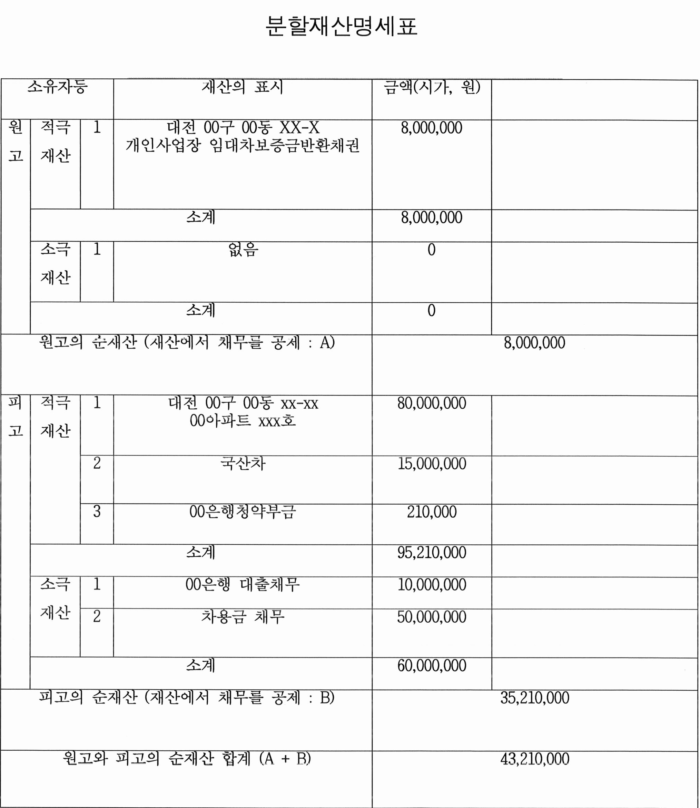
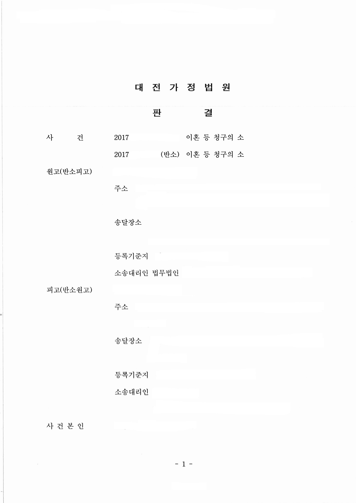

안녕하세요,
법무법인 글로리
대표 변호사 이아무 입니다.
오늘 소개해드릴 재산분할 사례는
원고를 대리하여 피고에게
위자료와 재산분할, 친권 양육자, 양육비 등을
청구한 소송입니다.
술을 입에 달고 살던 피고는
항상 밤 늦게까지 술을 마시고
늦게 귀가하여 원고의 속을 타게 만들었습니다.
원고가 임신하여 만삭의 몸으로
사업장에서 일을 함에도 불구하고
피고는 유흥주점에서 여자들과 술을 마시다
원고에게 발각되어 원고에게 사과하며,
다시는 그러지 않겠다는 각서를 작성하였으나
이후에도 늦게 술을 마시고
귀가하는 습관은 고쳐지지 않았고,
오히려 원고를 의부증 환자로 몰아 욕을 하고
폭력을 행사하였습니다.
미성년 자녀 눈 앞에서
원고의 목을 조르고 배를 때리는 등
폭력적인 모습 또한 수시로 보여
부부의 어린 미성년 자녀가
충격을 먹는 일도 한두 번이 아니었습니다.
원고는 혼인 전부터 개인사업을 꾸준히 하였고,
자녀 출산 전후 3개월을 제외한
나머지 기간 동안에도 쉬지 않고
일을 하여 피고의 소득보다 많은
소득을 발생시켜,
차량 할부 및 잔존 할부들을
모두 변제한 사실 또한 있었습니다.
하지만 피고는 이 일에 대해 말하거나,
듣기를 싫어했고 온갖 멸시 섞인
말들을 원고에게 쏟아냈고
피고의 부모님 또한 원고와 원고의 부모님에게
폭언과 막말을 스스럼없이 하여
원고의 마음에 큰 상처를 주었습니다.
1. 기본적인 사항
① 혼인 기간 4년
② 원고 : 개인사업자
피고 : 부모님이 운영하는 사업체에서 근무
③ 미성년 자녀 여부 : 1명
2. 분할의 대상이 된 재산

3. 판결 결과
피고는 원고에게 재산분할로 14,000,000원을 지급하라
판단 근거는 재산분할 대상의 취득 경위와
이용 현황 및 형성, 유지에 대한 원, 피고의 기여도,
나이, 직업, 혼인생활 과정, 기간 등을 참작하여
원고와 피고의 순재산 중
재산분할의 비율에 따른 원고의 몫은
21,605,000원 (43,210,000원 X 50%)이므로
이 금원에서 원고의 순재산(8,000,000 원)을 제한
13,605,000 원을 약간 상회하는
14,000,000 원이 재산분할금이 되었습니다.
원고와 피고의 각 적극, 소극재산은
각 그 명의대로 귀속하는 것으로 하고
원고에게 궁극적으로 귀속되어야 할 금액 중
부족한 부분은 피고가 원고에게 현금으로
지급하는 것이 타당하다는 재판부의 판결입니다.
4. 위와 같은 결과가 나오게 된 원인
이 사건 재산분할 판결의 핵심은
위 재산 명세표에서 확인 가능하듯이,
원고의 재산은 800만 원 상당, 피고는 3,500만 원 상당으로,
피고의 재산이 더 많았음에도 불구하고
전체 재산(원피고 명의 재산의 합) 4,300만 원 중
절반에 해당하는 2,150만 원 상당의 재산을
원고에게 귀속시키는 판결을 받았다는 점입니다.
이 사건은 사실, 혼인 파탄의 책임은
쌍방에게 있는 것으로 하여,
위자료 청구는 쌍방 기각이 나왔음에도,
재산분할에서는 원고의 기여도를 인정하여
피고 명의 재산 중 일부를
원고에게 이전하는 판결을 받았는데요,
피고 입장에서는 억울할 수도 있으나,
이와 같은 결과를 받아낼 수 있었던 것은...
원고 대리인은 원고가 자녀를 양육하면서도
피고보다 많은 소득을 발생시켰다는 점,
맞벌이를 하면서도
가사 노동과 양육은 원고가 주로 하였다는 점,
피고는 자신의 소득 중 많은 부분을
생활비가 아닌 자신의 유흥에
소비하였다는 점 등을 주장 입증하였고,
재판부는 이를 인정하여 피고의 재산일지라도
그 형성과 유지에 원고의 기여도가 있다는 점을 인정하였습니다.



tip) 재산분할의 기여도는
그 주장 입증의 여하에 따라, 크게 달라질 수 있습니다.
자신에게 위 사례와 같은 기여도가 있다고 생각되신다면,
섣불리 포기하지 마시고
변호사를 선임하여 다퉈 보시길 추천드립니다.